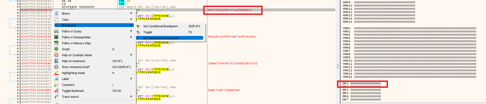
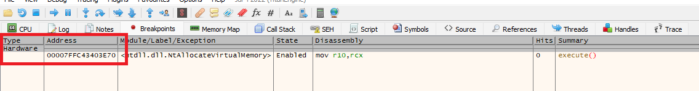
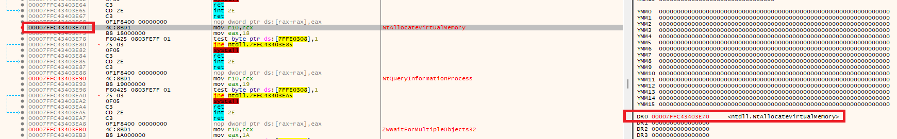
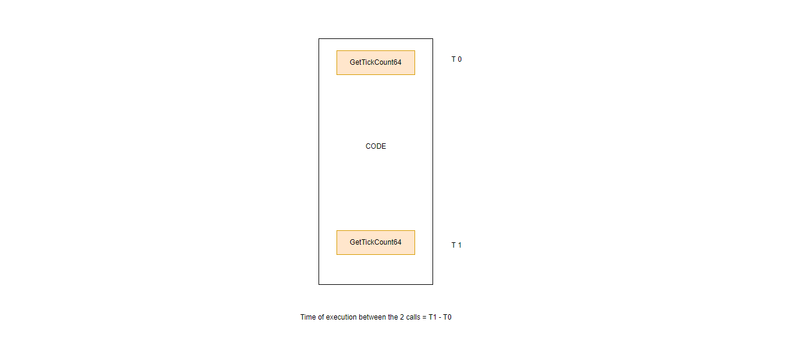

Introduction
Security researchers and malware analysts will use debugging to enhance their understanding of malware samples. This enables them to write better detection rules against these samples. As a malware developer, one should always arm themselves with anti-debugging techniques to make the process more time-consuming for analysts.
This module discusses several anti-debugging techniques.
Detecting Debuggers Via IsDebuggerPresent
One of the easiest anti-debugging techniques is to use the IsDebuggerPresent WinAPI. This function returns TRUE if a debugger is attached to the calling process or FALSE if there isn't. The following code snippet shows the function to detect a debugger.
if (IsDebuggerPresent()) {
printf("[i] IsDebuggerPresent detected a debugger \n");
// Run harmless code..
}IsDebuggerPresent Replacement (1)
Calling the IsDebuggerPresent WinAPI is suspicious even if it is well hidden through API hashing. The WinAPI is considered a very basic approach to detect debuggers and can be bypassed with tools like ScyllaHide which is an anti anti-debugger plugin for xdbg.
A better approach is to create a custom version of the IsDebuggerPresent WinAPI. Recall the Windows Processes - beginner module which showed the PEB structure having a BeingDebugged member that is set to 1 when the process is being debugged. A simple IsDebuggerPresent WinAPI replacement involves checking the BeingDebugged value as shown in the custom function below.
The IsDebuggerPresent2 function returns TRUE if the BeingDebugged element is set to 1.
BOOL IsDebuggerPresent2() {
// getting the PEB structure
#ifdef _WIN64
PPEB pPeb = (PEB*)(__readgsqword(0x60));
#elif _WIN32
PPEB pPeb = (PEB*)(__readfsdword(0x30));
#endif// checking the 'BeingDebugged' element
if (pPeb->BeingDebugged == 1)
return TRUE;
return FALSE;
}IsDebuggerPresent Replacement (2)
Another way to make a custom-made version of the IsDebuggerPresent WinAPI is by utilizing the undocumented NtGlobalFlag flag which is also found within the PEB structure. The NtGlobalFlag member is set to 0x70 (hex) if the process is being debugged otherwise it's 0. It's important to note that the NtGlobalFlag element is set to 0x70 only when the process is created by the debugger. Therefore, this method will fail in detecting a debugger if it was attacher after execution.
The value 0x70 is derived from the combination of the following flags:
FLG_HEAP_ENABLE_TAIL_CHECK - 0x10FLG_HEAP_ENABLE_FREE_CHECK - 0x20FLG_HEAP_VALIDATE_PARAMETERS - 0x40The IsDebuggerPresent3 function returns TRUE if the NtGlobalFlag element is set to 0x70.
#define FLG_HEAP_ENABLE_TAIL_CHECK 0x10#define FLG_HEAP_ENABLE_FREE_CHECK 0x20#define FLG_HEAP_VALIDATE_PARAMETERS 0x40
BOOL IsDebuggerPresent3() {
// getting the PEB structure
#ifdef _WIN64
PPEB pPeb = (PEB*)(__readgsqword(0x60));
#elif _WIN32
PPEB pPeb = (PEB*)(__readfsdword(0x30));
#endif// checking the 'NtGlobalFlag' element
if (pPeb->NtGlobalFlag == (FLG_HEAP_ENABLE_TAIL_CHECK | FLG_HEAP_ENABLE_FREE_CHECK | FLG_HEAP_VALIDATE_PARAMETERS))
return TRUE;
return FALSE;
}Detecting Debugger Via NtQueryInformationProcess
The NtQueryInformationProcess syscall will be utilized to detect debuggers via two flags, ProcessDebugPort and ProcessDebugObjectHandle.
Recall that NtQueryInformationProcess looks like the following
NTSTATUS NtQueryInformationProcess(
IN HANDLE ProcessHandle, // Process handle for which information is to be retrieved.
IN PROCESSINFOCLASS ProcessInformationClass, // Type of process information to be retrieved
OUT PVOID ProcessInformation, // Pointer to the buffer into which the function writes the requested information
IN ULONG ProcessInformationLength, // The size of the buffer pointed to by the 'ProcessInformation' parameter
OUT PULONG ReturnLength // Pointer to a variable in which the function returns the size of the requested information
);ProcessDebugPort Flag
Microsoft's documentation on the ProcessDebugPort flag states the following:
Retrieves a DWORD_PTR value that is the port number of the debugger for the process. A nonzero value indicates that the process is being run under the control of a ring 3 debugger
In other words, if NtQueryInformationProcess returns a non-zero value received by the ProcessInformation parameter, the process is being actively debugged.
ProcessDebugObjectHandle Flag
The undocumented flag, ProcessDebugObjectHandle, works like the former ProcessDebugPort flag and is used to get a handle to the debug object handle of the current process which is created if the process is being debugged. A non-zero value obtained by the ProcessInformation parameter through NtQueryInformationProcess implies active debugging of the process.
In the case where NtQueryInformationProcess fails to retrieve the debug object handle, it means it did not detect a debugger and will return the error code 0xC0000353. Based on Microsoft's documentation on NTSTATUS Values, the error code is equivalent to STATUS_PORT_NOT_SET.
NtQueryInformationProcess Anti-Debugging Code
The NtQIPDebuggerCheck function uses both ProcessInformation & ProcessDebugObjectHandle to detect debuggers. The function returns TRUE if NtQueryInformationProcess returns a valid handle using both ProcessDebugPort and ProcessDebugObjectHandle flags.
BOOL NtQIPDebuggerCheck() {
NTSTATUS STATUS = NULL;
fnNtQueryInformationProcess pNtQueryInformationProcess = NULL;
DWORD64 dwIsDebuggerPresent = NULL;
DWORD64 hProcessDebugObject = NULL;
// Getting NtQueryInformationProcess address
pNtQueryInformationProcess = (fnNtQueryInformationProcess)GetProcAddress(GetModuleHandle(TEXT("NTDLL.DLL")), "NtQueryInformationProcess");
if (pNtQueryInformationProcess == NULL) {
printf("\t[!] GetProcAddress Failed With Error : %d \n", GetLastError());
return FALSE;
}
// Calling NtQueryInformationProcess with the 'ProcessDebugPort' flag
STATUS = pNtQueryInformationProcess(
GetCurrentProcess(),
ProcessDebugPort,
&dwIsDebuggerPresent,
sizeof(DWORD64),
NULL
);
if (STATUS != 0x0) {
printf("\t[!] NtQueryInformationProcess [1] Failed With Status : 0x%0.8X \n", STATUS);
return FALSE;
}
// If NtQueryInformationProcess returned a non-zero value, the handle is valid, which means we are being debugged
if (dwIsDebuggerPresent != NULL) {
// detected a debugger
return TRUE;
}
// Calling NtQueryInformationProcess with the 'ProcessDebugObjectHandle' flag
STATUS = pNtQueryInformationProcess(
GetCurrentProcess(),
ProcessDebugObjectHandle,
&hProcessDebugObject,
sizeof(DWORD64),
NULL
);
// If STATUS is not 0 and not 0xC0000353 (that is 'STATUS_PORT_NOT_SET')
if (STATUS != 0x0 && STATUS != 0xC0000353) {
printf("\t[!] NtQueryInformationProcess [2] Failed With Status : 0x%0.8X \n", STATUS);
return FALSE;
}
// If NtQueryInformationProcess returned a non-zero value, the handle is valid, which means we are being debugged
if (hProcessDebugObject != NULL) {
// detected a debugger
return TRUE;
}
return FALSE;
}Detecting Debugger Via Hardware Breakpoints
This method is only valid if hardware breakpoints are set during debugging. Hardware breakpoints, also known as hardware debug registers, are a feature of modern microprocessors that pauses the process's execution when a specific memory address or event is triggered. Hardware breakpoints are implemented in the processor itself and are therefore faster and more efficient than the normal software breakpoints, which rely on the operating system or debugger to periodically check the program's execution.
When hardware breakpoints are set, specific registers change in value. The values of these registers can be used to determine if a debugger is attached to the process. If the registers Dr0, Dr1, Dr2 and Dr3 contain a non-zero value, then the hardware breakpoint is set. The following example places a hardware breakpoint on the NtAllocateVirtualMemory syscall using the xdbg debugger. Notice how the value of Dr0 is changed from zero to NtAllocateVirtualMemory's address.



Retrieving The Value Of The Registers
To retrieve the value of the Dr registers, the GetThreadContext WinAPI can be used. Recall the usage of GetThreadContext from the Thread Hijacking modules in which it was used to retrieve the context of a specified thread. The context was returned as a CONTEXT structure. This structure also includes the values of the Dr0, Dr1, Dr2 and Dr3 registers.
The HardwareBpCheck function detects the presence of a debugger by checking the values of the aforementioned registers. The function returns TRUEif a debugger is detected.
BOOL HardwareBpCheck() {
CONTEXT Ctx = { .ContextFlags = CONTEXT_DEBUG_REGISTERS };
if (!GetThreadContext(GetCurrentThread(), &Ctx)) {
printf("\t[!] GetThreadContext Failed With Error : %d \n", GetLastError());
return FALSE;
}
if (Ctx.Dr0 != NULL || Ctx.Dr1 != NULL || Ctx.Dr2 != NULL || Ctx.Dr3 != NULL)
return TRUE; // Detected a debugger
return FALSE;
}Detecting Debuggers Via BlackListed Arrays
Another way to detect debugging processes can be done by checking the names of currently running processes against a list of known debugger names. This "blacklist" of names is stored in a hardcoded array. If a match is found between the name of a process and the blacklist, then a debugger application is running on the system.
Enumerating the processes running on the machine can be from any of the previously discussed techniques. For this scenario, the CreateToolhelp32Snapshot process enumeration technique will be used.
The blacklist array used is represented as the following
#define BLACKLISTARRAY_SIZE 5 // Number of elements inside the array
WCHAR* g_BlackListedDebuggers[BLACKLISTARRAY_SIZE] = {
L"x64dbg.exe", // xdbg debugger
L"ida.exe", // IDA disassembler
L"ida64.exe", // IDA disassembler
L"VsDebugConsole.exe", // Visual Studio debugger
L"msvsmon.exe" // Visual Studio debugger
};The blacklist array should contain as many debugger names as possible in order to detect a wider range of debuggers. Additionally, the strings should be obfuscated via string hashing as debugger names in the binary could be used as IoCs.
The BlackListedProcessesCheck function uses the g_BlackListedDebuggers array as the blacklist processes array. It will return TRUE in case a process name matches with an element of g_BlackListedDebuggers
BOOL BlackListedProcessesCheck() {
HANDLE hSnapShot = NULL;
PROCESSENTRY32W ProcEntry = { .dwSize = sizeof(PROCESSENTRY32W) };
BOOL bSTATE = FALSE;
hSnapShot = CreateToolhelp32Snapshot(TH32CS_SNAPPROCESS, NULL);
if (hSnapShot == INVALID_HANDLE_VALUE) {
printf("\t[!] CreateToolhelp32Snapshot Failed With Error : %d \n", GetLastError());
goto _EndOfFunction;
}
if (!Process32FirstW(hSnapShot, &ProcEntry)) {
printf("\t[!] Process32FirstW Failed With Error : %d \n", GetLastError());
goto _EndOfFunction;
}
do {
// Loops through the 'g_BlackListedDebuggers' array and comparing each element to the
// Current process name captured from the snapshot
for (int i = 0; i < BLACKLISTARRAY_SIZE; i++){
if (wcscmp(ProcEntry.szExeFile, g_BlackListedDebuggers[i]) == 0) {
// Debugger detected
wprintf(L"\t[i] Found \"%s\" Of Pid : %d \n", ProcEntry.szExeFile, ProcEntry.th32ProcessID);
bSTATE = TRUE;
break;
}
}
} while (Process32Next(hSnapShot, &ProcEntry));
_EndOfFunction:
if (hSnapShot != NULL)
CloseHandle(hSnapShot);
return bSTATE;
}Breakpoint Detection Via GetTickCount64
Breakpoints are used to pause the execution of a program at a specific point, allowing one to inspect the memory, registers state, variables and more.
The pause of execution can be detected by using the GetTickCount64 WinAPI. This function retrieves the number of milliseconds that have elapsed since the system was started. Analyzing the time taken by the processor between two GetTickCount64 can indicate whether the malware is being debugged. If the time took longer than expected, it's safe to assume the malware is being debugged.

Detecting Delays
Breakpoints can be detected by calculating the average of T1 - T0 and storing it as a hardcoded value. When the output of T1 - T0 exceeds this value, the delay is likely caused by breakpoints. For example, if the output of T1 - T0 on the host machine is 20 seconds, but the output is greater than that during runtime, then there is a strong possibility that the delay between these two points is caused by a breakpoint. The original value should be increased slightly to account for processors that may be slower.
GetTickCount64 Anti-Debugging Code
The TimeTickCheck1 function uses the described approach to detect breakpoints. The function returns TRUE if dwTime2 - dwTime1 exceeds the average value of executing code in between, which is 50.
BOOL TimeTickCheck1() {
DWORD dwTime1 = NULL,
dwTime2 = NULL;
dwTime1 = GetTickCount64();
/*
OTHER CODE
*/
dwTime2 = GetTickCount64();
printf("\t[i] (dwTime2 - dwTime1) : %d \n", (dwTime2 - dwTime1));
if ((dwTime2 - dwTime1) > 50) {
return TRUE;
}
return FALSE;
}Breakpoint Detection Via QueryPerformanceCounter
The QueryPerformanceCounter WinAPI is the same as the previously shown GetTickCount64 WinAPI. The difference is that QueryPerformanceCounter uses a high-resolution performance counter provided by the hardware which can measure time in increments of nanoseconds whereas GetTickCount64 uses a time counter that increments every millisecond. Note that QueryPerformanceCounter retrieves the performance-counter value in counts rather than milliseconds.
The TimeTickCheck2 function uses the QueryPerformanceCounter WinAPI to detect breakpoints. It returns TRUE if Time2.QuadPart - Time1.QuadPart exceeds the average value of executing code in between, which is 100000 counts.
BOOL TimeTickCheck2() {
LARGE_INTEGER Time1 = { 0 },
Time2 = { 0 };
if (!QueryPerformanceCounter(&Time1)) {
printf("\t[!] QueryPerformanceCounter [1] Failed With Error : %d \n", GetLastError());
return FALSE;
}
/*
OTHER CODE
*/
if (!QueryPerformanceCounter(&Time2)) {
printf("\t[!] QueryPerformanceCounter [2] Failed With Error : %d \n", GetLastError());
return FALSE;
}
printf("\t[i] (Time2.QuadPart - Time1.QuadPart) : %d \n", (Time2.QuadPart - Time1.QuadPart));
if ((Time2.QuadPart - Time1.QuadPart) > 100000){
return TRUE;
}
return FALSE;
}Detecting Debugger Via DebugBreak
DebugBreak causes the breakpoint exception, EXCEPTION_BREAKPOINT, to occur in the current process. This exception is supposed to be handled by a debugger if it is attached to the current process. The technique is to trigger the exception and see if a debugger attempts to handle this exception.
A __try and __except code block will be used to handle the exception from the DebugBreak call, and a GetExceptionCode call will be used to fetch the exception code generated in which case there are two possible scenarios:
EXCEPTION_BREAKPOINT then EXCEPTION_EXECUTE_HANDLER is executed, this means the exception was not handled by a debugger.EXCEPTION_BREAKPOINT, meaning a debugger handled the raised exception (and not our try-except code block), then EXCEPTION_CONTINUE_SEARCH is executed, this force the debugger to be responsible for handling the raised exception.The following DebugBreakCheck function returns FALSE if the DebugBreak WinAPI is successfully executed and the exception is not caught/handled by a debugger, and instead handled by our try-except code block, indicating that no debugger is attached to the current process.
BOOL DebugBreakCheck() {
__try {
DebugBreak();
}
__except (GetExceptionCode() == EXCEPTION_BREAKPOINT ? EXCEPTION_EXECUTE_HANDLER : EXCEPTION_CONTINUE_SEARCH) {
// if the exception is equal to EXCEPTION_BREAKPOINT, EXCEPTION_EXECUTE_HANDLER is executed and the function return FALSE
return FALSE;
}
// if the exception is not equal to EXCEPTION_BREAKPOINT, EXCEPTION_CONTINUE_SEARCH is executed and the function return TRUE
return TRUE;
}Detecting Debugger Via OutputDebugString
Another WinAPI that can be utilized in detecting debuggers is OutputDebugString. This function is used to send a string to the debugger to display. If a debugger exists, then OutputDebugString will succeed in performing its task.
One can run OutputDebugString and check if it failed using GetLastError, if it did, then GetLastError will return a non-zero error code. A non-zero error code in this case is equivalent to no debugger being present. If GetLastError returns zero then OutputDebugString succeeded in sending a string to a debugger.
The OutputDebugStringCheck function uses the above logic and returns TRUE if OutputDebugStringW succeeds. Additionally, it uses SetLastError to set the last error value to 1. This is simply to make sure that it is a non-zero value before the OutputDebugString call in order to reduce false positives.
BOOL OutputDebugStringCheck() {
SetLastError(1);
OutputDebugStringW(L"Offensive Engineering Handbook");
// if GetLastError is 0, then OutputDebugStringW succeeded
if (GetLastError() == 0) {
return TRUE;
}
return FALSE;
}